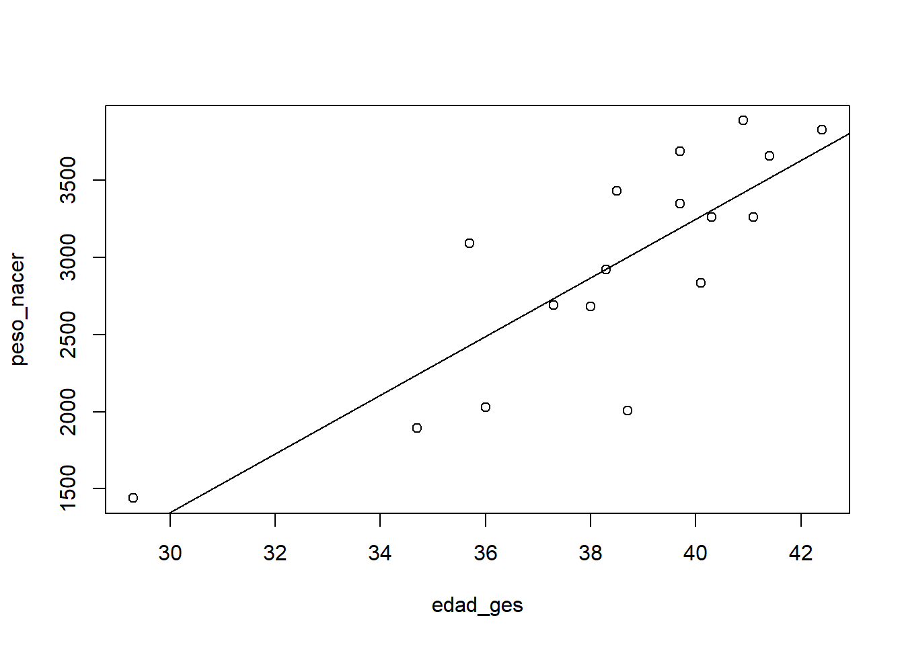
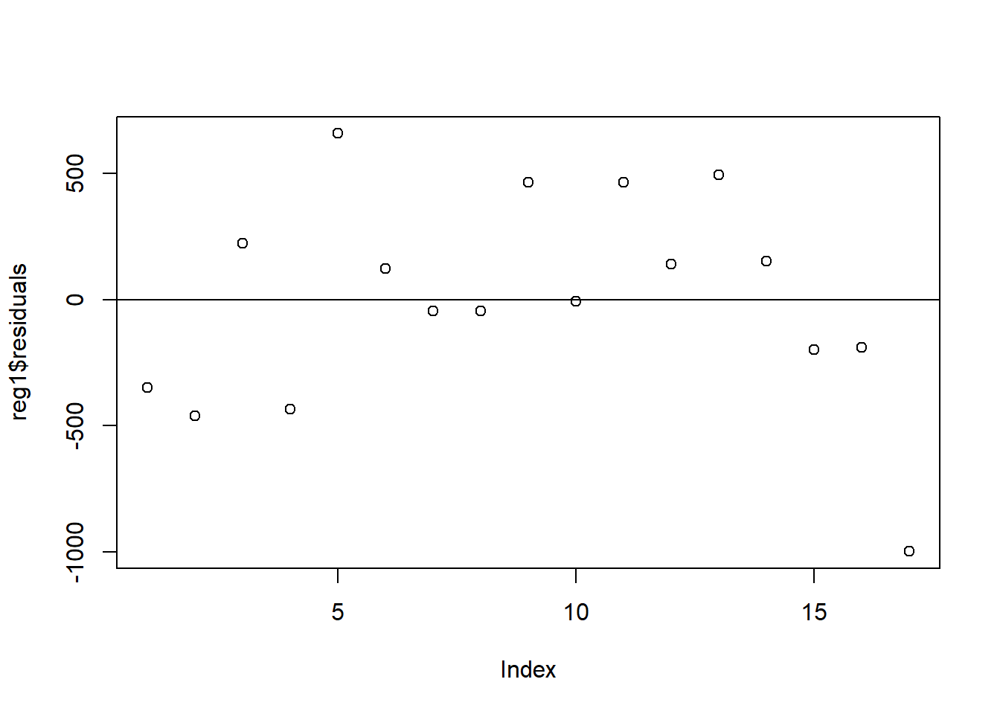

- Prefacio
- 1 El software
- 2 Tipos de datos y objetos en R
- 3 Lectura de archivos
- 4 Análisis exploratorio de datos
- 5 Análisis descriptivo para variables correlacionadas
- 6 Intervalos de confianza
- 7 Intervalo de confianza y prueba de hipótesis para comparar dos medias
- 8 Análisis de varianza en una clasificación
- References
5.1 Ejemplo 1
Consideremos un experimento donde se registraron datos de la edad gestacional y peso al nacer de un grupo de 17 bebés.
edad_ges <- c(34.7, 36,29.3, 40.1, 35.7, 42.4, 40.3, 37.3, 40.9,
38.3, 38.5, 41.4, 39.7, 39.7, 41.1, 38, 38.7)
peso_nacer <- c(1895, 2030, 1440, 2835, 3090, 3827, 3260, 2690,
3885, 2920, 3430, 3657, 3685, 3345, 3260, 2680, 2005)Para comprender la relación entre estas dos variables, se puede calcular su correlación,
## [1] 0.8197466y reforzar el resultado numérico obtenido, mediante un diagrama de dispersión

Podemos ajustar un modelo de regresión lineal, para establecer la relación lineal de una variable respecto a la otra,
y solicitar los detalles del modelo con la siguiente instrucción,
##
## Call:
## lm(formula = peso_nacer ~ edad_ges)
##
## Residuals:
## Min 1Q Median 3Q Max
## -997.12 -198.17 -6.12 224.06 657.93
##
## Coefficients:
## Estimate Std. Error t value Pr(>|t|)
## (Intercept) -4351.62 1319.06 -3.299 0.00487 **
## edad_ges 190.02 34.28 5.543 5.63e-05 ***
## ---
## Signif. codes: 0 '***' 0.001 '**' 0.01 '*' 0.05 '.' 0.1 ' ' 1
##
## Residual standard error: 432.8 on 15 degrees of freedom
## Multiple R-squared: 0.672, Adjusted R-squared: 0.6501
## F-statistic: 30.73 on 1 and 15 DF, p-value: 5.629e-05podemos además ajustar la línea de regresión en el diagrama de dispersión,

Para extraer información específica asociada al modelo, como por ejemplo sus coeficientes, podemos usar la siguiente instrucción,
## (Intercept) edad_ges
## -4351.6240 190.0193y analizar el comportamiento de los residuales gráficamente
